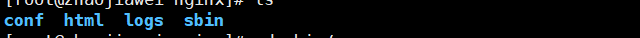
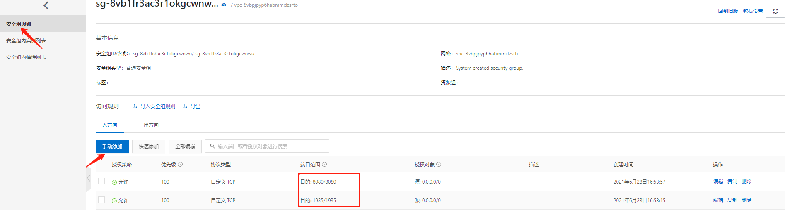
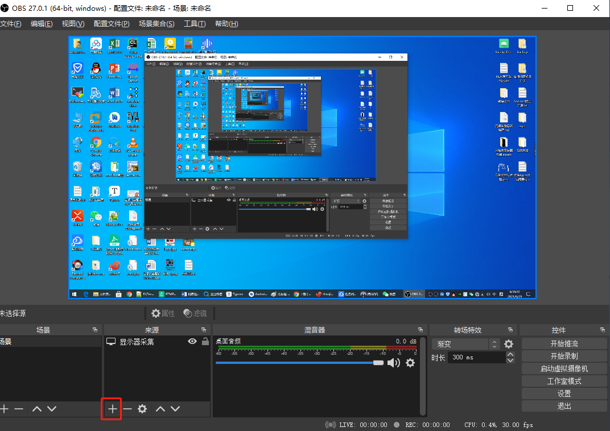
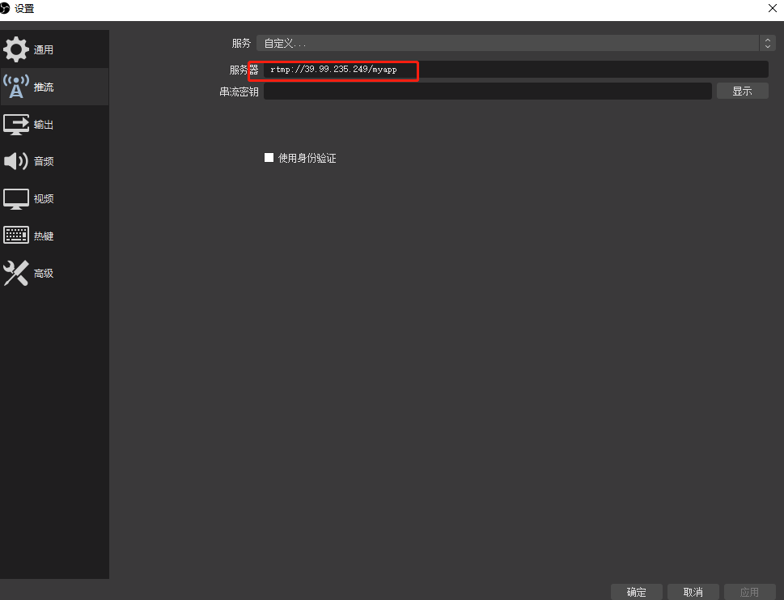
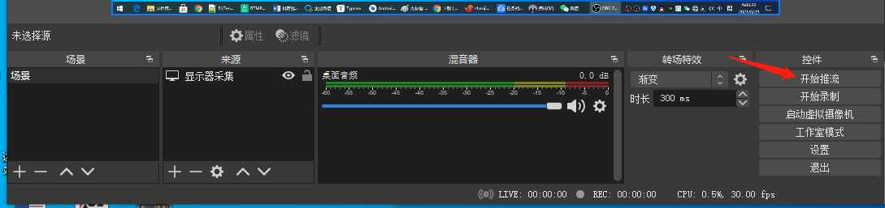
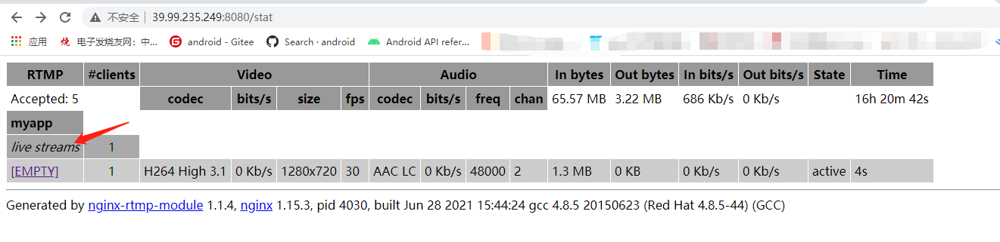
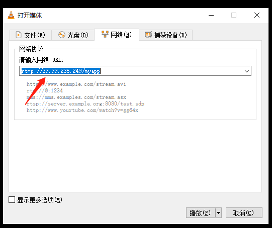

流媒体服务器搭建¶
一、服务器搭建¶
1.下载nginx并解压：¶
wget http://nginx.org/download/nginx-1.15.3.tar.gz
tar xvf nginx-1.15.3.tar.gz
2.下载rtmp-module模块并解压：¶
wget https://codeload.github.com/arut/nginx-rtmp-module/tar.gz/v1.2.1
tar xvf v1.2.1
3.进入nginx目录：¶
cd nginx-1.15.3
执行下面命令：--prefix=生成结果路径 --add-module=管理rtmp模块
./configure --prefix=./bin --add-module=../nginx-rtmp-module-1.2.1
如果执行过程中，报以下错误：
./configure: error: the HTTP rewrite module requires the PCRE library.
You can either disable the module by using --without-http_rewrite_module
option, or install the PCRE library into the system, or build the PCRE library
statically from the source with nginx by using --with-pcre=<path> option.
说明缺少依赖包，centos用yum命令安装，ubuntu用apt install安装。
yum -y install zlib zlib-devel openssl openssl--devel pcre pcre-devel
不同的系统版本列出的安装包版本不同，可通过 yum search 依赖包 来查看。
4.上面步骤成功后，会在nginx目录下生成Makefile文件，执行编译：¶
make install
5.编译完成后，会在/usr/local/nginx目录下生成以下文件：¶

6.进入conf目录，修改nginx.conf文件：¶
#如果不加，启动nginx服务器就会报错，权限被拒绝
user root;
worker_processes 1;
#如果启动错误，这个就是错误日志详情
error_log logs/error.log debug;
events {
worker_connections 1024;
}
rtmp {
server {
#注意端口占用 流媒体服务器的端口
listen 1935;
#如果不加，可能会失败
application myapp {
live on;
#丢弃闲置5s的连接
drop_idle_publisher 5s;
}
}
}
#下面就是为了测试 http://139.224.136.101:8080/stat 控制面板的意思
http {
server {
#注意端口占用
listen 8080;
location /stat {
rtmp_stat all;
rtmp_stat_stylesheet stat.xsl;
}
location /stat.xsl
{
#注意目录
root /root/workspace/nginxServer/nginx-rtmp-module-1.2.1/;
}
location /control
{
rtmp_control all;
}
location /rtmp-publisher
{
#注意目录
root /root/workspace/nginxServer/nginx-rtmp-module-1.2.1/test;
}
location / {
#注意目录
root /root/workspace/nginxServer/nginx-rtmp-module-1.2.1/test/www;
}
}
}
7.进入nginx根目录，执行¶
/usr/local/nginx/sbin/nginx
解决端口被占用问题
nginx: [emerg] bind() to 0.0.0.0:1935 failed (98: Address already in use)
nginx: [emerg] bind() to 0.0.0.0:8080 failed (98: Address already in use)
nginx: [emerg] bind() to 0.0.0.0:1935 failed (98: Address already in use)
nginx: [emerg] bind() to 0.0.0.0:8080 failed (98: Address already in use)
nginx: [emerg] bind() to 0.0.0.0:1935 failed (98: Address already in use)
nginx: [emerg] bind() to 0.0.0.0:8080 failed (98: Address already in use)
nginx: [emerg] bind() to 0.0.0.0:1935 failed (98: Address already in use)
nginx: [emerg] bind() to 0.0.0.0:8080 failed (98: Address already in use)
nginx: [emerg] bind() to 0.0.0.0:1935 failed (98: Address already in use)
nginx: [emerg] bind() to 0.0.0.0:8080 failed (98: Address already in use)
nginx: [emerg] still could not bind()
需要安装lsof工具来查看被占用端口
yum install lsof
执行命令查看哪些端口被占用：
lsof -i :8080
#依次结束占用端口的进程
kill -9 pid
排查端口没有任何进程占用后，再次启动nginx
/usr/local/nginx/sbin/nginx
在安全组添加配置规则，打开8080端口和1935端口

至此，流媒体服务器搭建完成，直接访问即可：
接下来就可以进行推流了。
二、使用obs studio进行推流¶
上面我们把流媒体服务器搭建好以后，我们使用OBS Studio可以实现简单的推流。
1.下载OBS Studio，https://obsproject.com/zh-cn/download
2.打开obs studio后，点击来源中的＋号
选择显示器采集，就会把我们显示屏的界面添加进去。
3.在文件----->设置------>推流 中选择自定义服务，服务器就是我们刚刚搭建好的服务器，但是这里需要用rtmp来进行推流

4.点击确定后，就可以进行推流了。

5.在浏览器界面打开服务器，就可以看见我们推上去的流了。

6.用VLC播放器，通过网络串流 输入我们的rtmp流地址，就可以进行拉流了。
